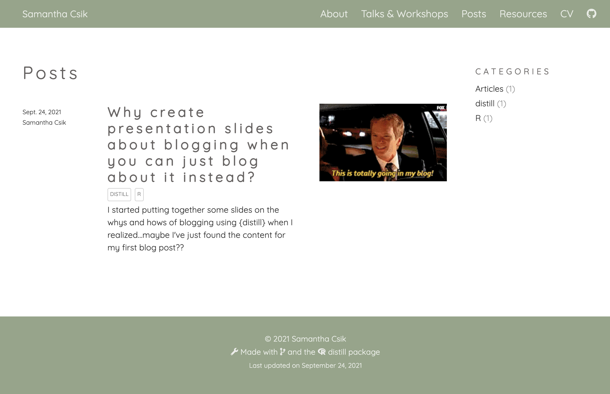

I started putting together some slides on the whys and hows of blogging using {distill} when I realized…maybe I’ve just found the content for my first blog post??
I am a total blog newb.
BUT we all have to start somewhere. And my somewhere is leading a mini-workshop in T-6 days for our first Master of Environmental Data Science (MEDS) cohort (read more about this awesome new program here) on why blogging as data scientists is an important and valuable skill to practice, what a good blog post might look like, and some of the technical aspects of creating blog posts using the {distill} package.
I originally set off on my self-education journey by digging into other data science-related blogs and throwing together some slides about what I found. I even practiced creating a fake blog post on my own (and very much still under development) personal website in case anyone asked me to walk them through the steps (I can’t look like I don’t know what I’m doing now, right??).
Ten slides deep and then it struck me – I was creating a presentation on how to blog without ever actually creating my own blog post?? Dammit. Doesn’t quite feel right. So here we are. Baby’s first blog post ~about blog posts~. I’d say this first post is half meant to serve our MEDS students as they embark on their fall quarter (and will surely be asked to blog every now and again) and half meant to be the catalyst I so desperately needed to finally put a little bit of writing out there in the data science world.
So here we go! I’ll start by sharing examples of different blogs that I think demonstrate a few creative ways to format and publish data science content. Then I’ll review some of the cool things you can do with {distill} to customize your own beautiful posts.
Data science blogging has become pretty darn popular in recent years, and for good reason. It can help you to build your online professional profile, enhance your communication skills, stay atop the latest and greatest trends and tools, connect with other data scientists, and even solicit feedback from those in the community.
But arguably one of the most valuable reasons to blog is to get a whole lot better at doing whatever it is you want to write about. You’ve probably heard some version of the saying, “The best way to learn something is to teach it to others” – not only do I find this to be true of myself, but there’s also science1 to back this up!
Still, getting started can be a bit intimidating (I’m only doing this for the first time now myself). It an attempt to make it a little less so for the next blogger-to-be, I have tried to gather some ideas, instructions, and inspiration to get things going. If nothing else, I think heeding the advice of this tweet2 is a pretty good place to start:
When you’ve written the same code 3 times, write a function
— David Robinson ((drob?)) November 9, 2017
When you’ve given the same in-person advice 3 times, write a blog post
There are lots of creative ways to blog (both for yourself and your target audience) about your data science journey. Here are just a few examples3 that caught my eye.
Allison Horst shares all the exciting ways you can customize tables using the {gt} package, including code snippets and resulting outputs in her post, Customizing tables is fun (seriously) with gt (Horst 2021).
Harry Fisher (Data, Code & Coffee) explores {nakedpipe} a new(er) alternative to {magrittr}’s %>% in his blog post, Penguins and nakedpipes (Fisher 2020).
Eric Ekholm covers how to use the {ggtext} package to replace your use of ggplot legends with colored title text in his post, Improving ggplots with Text Color (EE (2021)). Importantly, he discusses when it might be most appropriate to do so and when you might opt for an alternative method.
Ella Kaye documents her progress through the 2020 Advent of Code, a series of small coding challenges, released daily through December in her post Advent of Code, 2020 (Kaye 2020).
Danielle Brantley (Data Sci Dani) recaps her experiences at R Conference 2020 and provides brief overviews of the R packages she learned about along the way in her post, Packages I Learned about at R Conference NYC (Brantley 2020).
Kaija Gahm (woodpeckeR) defines a coding problem, provides some context, and describes her solution along with why it works in her post, %$%: upping your pipe game (Gahm 2021).
Ijeamaka Anyene is a computational aRtist who shares her process of creating abstract geometrical rectangular designs (check out her ‘Subdivisions Series’ on her Etsy shop) in her post, So, you want to subdivide a rectangle (Anyene 2021).
Matt Kerlogue (The Lapsed Geographer) details his use of the {pdftools} and tidyverse packages in R to web scrape and wrangle COVID-19 data from UK reports in his post, Scraping Google’s COVID-19 mobility report PDFs (Kerlogue 2020b). He later follows up with instructions on how to automate this process for reports from ~130 countries and all 50 US states in his post, Automating the COVID-19 PDF scraping (Kerlogue 2020a).
Now that we’re all feeling inspired to flex our creative data science muscles, let’s create and customize our own blog posts
Disclaimer: A lot of the following content (sections III & IV) is just a compilation of excellent existing resources. I learn by repeating things (usually many times), so taking the time to type out code/YAML headers has been helpful, albeit not at all novel. See a list of referenced resources at the bottom of this post.
If you have not yet made a distill site, there are many great tutorials out there. For MEDS students, I recommend following along with these step-by-step instructions by Allison Horst before moving forward. For a very brief intro on customizing your distill site using CSS, check out these slides.
Now that you have your distill site up and running, you can create your first blog post by running the distill::create_post() function in your console:
create_post(title = "My blog post")
If this is the first time you are creating a blog post, {distill} will add a directory called _posts/, which will contain this plus all future blog posts. You will also need to create a listing page, which will list all of your posts. Do this by adding a blank .Rmd file to your root directory by running utils::file.edit("blog.Rmd") in your console, then add a YAML header to your new file as follows:
---
title: "Blog" # any name you want
listing: posts # do this exactly
---Finally, link your new listing page to your website’s navbar by editing _site.yml. Note: Since I named my listing .Rmd file as blog.Rmd, the href I need to link to is blog.html.
navbar:
right:
- text: "Home"
href: index.html
- text: "Blog" # add
href: blog.html # add
A couple simple touches can go a long way in improving the look of your distill blog. Here are some of the steps I followed to customize my first blog post.
Preview images are those fun little thumbnails that appear alongside blog posts on your listing page:

Add your image to the folder where your blog post .Rmd lives (e.g. _posts -> YYYY-MM-DD-my-blog-post -> my_preview_image.jpeg). Then, add the preview field to the YAML header of your blog post .Rmd file and set the value to the name of your preview image:
---
title: "my blog post"
# (additional metadata excluded for brevity)
preview: my_preview_image.jpeg # your preview image
---You can assign each post to one or more “categories,” making it easier for your readers to filter content. Do so by adding the categories field to the YAML header of your blog post .Rmd file, then list whichever self-defined categories you would like your post to be assigned to. For example, I assigned this blog post to two catetories: distill and R:
---
title: "Why create slides about blogging when you can just blog about it instead?"
# (additional metadata excluded for brevity)
categories:
- distill # list as many categories as you'd like
- R
---Take a look at your listing page to see all your categories (and how many articles are assigned to each). Assigned categories will also appear as metadata at the top of each post.
Table of contents can be helpful for readers to navigate longer posts. Add the toc (and optionally, toc_float) field to your blog’s YAML header as shown below:
---
title: "my blog post"
# (additional metadata excluded for brevity)
output:
distill::distill_article:
self_contained: false
toc: true # add a table of contents
toc_float: true # float it (positioned on the left-hand side, rather at the top)
---You can add automatically-generated citations to the bottom of your posts, making it easier for readers to reference your work.
I did this by first adding the base_url field to my _site.yml and set the value to the landing page URL of my distill site. For example:
---
name: "samanthacsik.github.io"
title: "Samantha Csik"
# (additional metadata excluded for brevity)
base_url: samanthacsik.github.io # add your website's landing page url
---I then specified the slug (the unique identifying part of a web address) in the YAML header of my blog post .Rmd file (a slug will be automatically generated if not provided):
---
title: "Why create slides about blogging when you can just blog about it instead?"
# (additional metadata excluded for brevity)
slug: csik2021firstBlog
---Your citations will now appear as metadata at the bottom of your post upon knitting.
You can use standard R Markdown bibliographies to cite works throughout your post and include a corresponding “References” list. You will first need to create a .bib file in the folder containing your blog post. You can do so by running the file.edit() function in your console. For example:
file.edit("_posts/YYYY-MM-DD-my-blog-post/bibliography.bib")
Next, add the bibliograhy field to the YAML header of your blog post .Rmd file and set the value to the name of your new .bib file:
---
title: "my blog post"
# (additional metadata excluded for brevity)
bibliography: bibliography.bib
---Now, add citation information to your .bib file. This is super easy if you are citing a distill article that has citation information already included – just copy and paste! Note: there are different formats (e.g. CSL or BibTeX) for creating bibliography files. I chose to use BibTeX.
For example, Allaire et al. (2018) includes the following BibTeX citation at the end of their post, which I have copied into my .bib file:
@misc{allaire2018distill,
author = {Allaire, JJ and Iannone, Rich and Presmanes Hill, Alison and Xie, Yihui},
title = {Distill for R Markdown},
url = {https://rstudio.github.io/distill},
year = {2018}
}Note the format of this citation, where type can be manual, book, article, misc, etc. (all case-insensitive) and key is the citation reference used for inserting in-text citations.
@type{key,
...
}To include an in-text citation for the above reference, type @allaire2018distill (or if you prefer your citation to be inside parentheses, [@allaire2018distill]). Adding the in-text citation will automatically add the full reference to your “References” list at the bottom of your post. To read more about including bibliographies and citations in your blog posts, see Xie (2021) and Xie, Dervieux, and Riederer (2021).
While citations and references will be automatically added as appendices to your blog post (if you followed along with the steps above), you can add additional content here by adding the .appendix class to any level 1 or level 2 header. For example, I added an additional “Corrections” statement to my appendix below by typing:
## Corrections {.appendix}
If you see mistakes or want to suggest changes...
I had a ton of fun playing around with some of these easy-to-implement features that the {distill} package provides for customizing blog posts. And I had even more fun checking out other data science blogs as I looked for inspiration. I hope they inspired you too! Happy blogging
If you see mistakes or want to suggest changes, please create an issue on the source repository.
Find the source code for this blog post here.
This is sometimes referred to as the Protégé Effect or the Feynman Learning Technique. You can learn a bit more from (Nestojko et al. 2014) and (Ambion et al. 2020)↩︎
I might also add that having to look up something 3x for yourself might be a good reason to blog about it. Read David Robinson’s full post about starting a data science blog here.↩︎
Many of the following blogs can be found on the distillery, a blog about building distill websites and blogs. Check it out!↩︎
For attribution, please cite this work as
Csik (2021, Sept. 24). samantha csik: Why create presentation slides about blogging when you can just blog about it instead?. Retrieved from samanthacsik.github.io/posts/2021-09-21-my-first-test-post/
BibTeX citation
@misc{csik2021firstBlog,
author = {Csik, Samantha},
title = {samantha csik: Why create presentation slides about blogging when you can just blog about it instead?},
url = {samanthacsik.github.io/posts/2021-09-21-my-first-test-post/},
year = {2021}
}